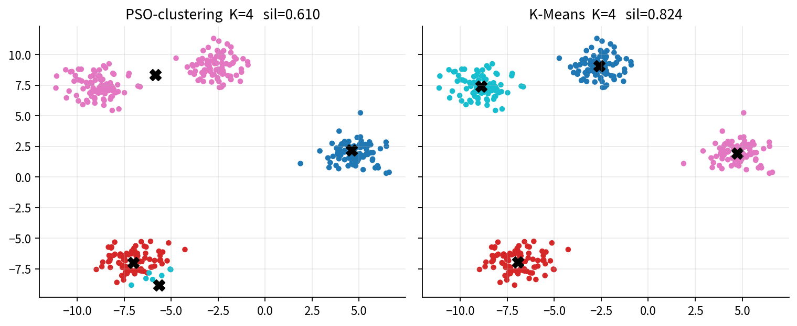
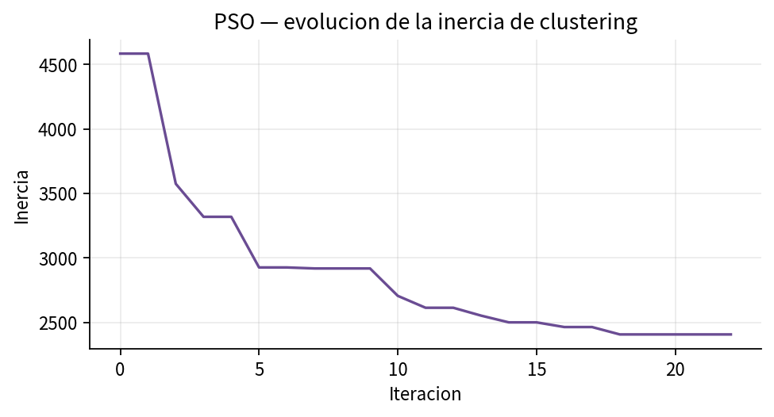
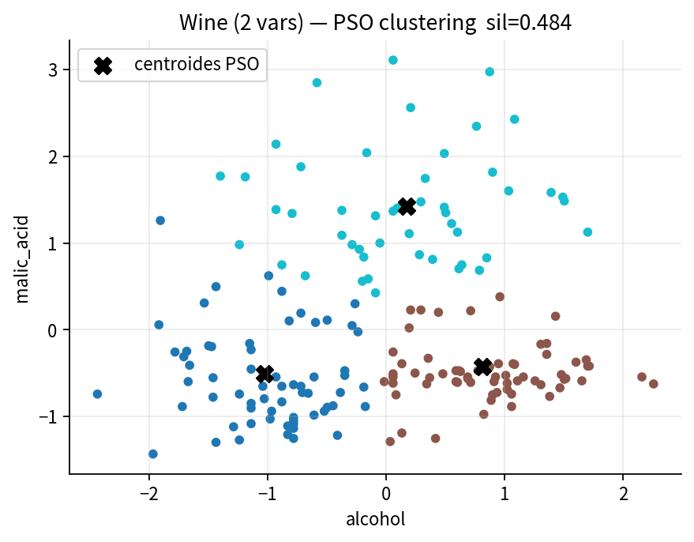

El agrupamiento se escribe como minimización de la inercia. K-Means constituye el especialista de esa función y se reporta como baseline.

Izquierda: asignación PSO. Derecha: K-Means. Las cruces marcan centros.

Descenso de la función objetivo a lo largo de 22 iteraciones.

Proyección únicamente visual; K = 3.
Partícula = concatenación de K centroides. En blobs, K = 4 y d = 2, de modo que el vector tiene longitud 8. La aptitud es la inercia.
K-Means con n_init = 10 está diseñado para esta función objetivo. Un PSO genérico, con presupuesto limitado, no tiene por qué superarlo.
El ejercicio justifica el ciclo del enjambre en clustering, no un recuento favorable. Una mejora natural es hibridar con un paso de K-Means.
| Problema | PSO | K-Means |
|---|---|---|
| Blobs, silueta | 0.610 | 0.824 |
| Wine 2 variables, silueta | ≈ 0.484 | ≈ 0.484 |